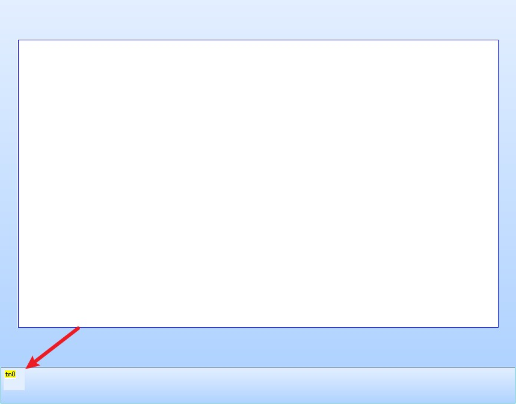
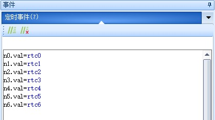
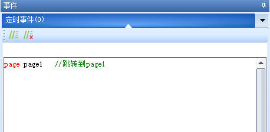
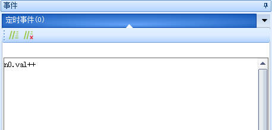
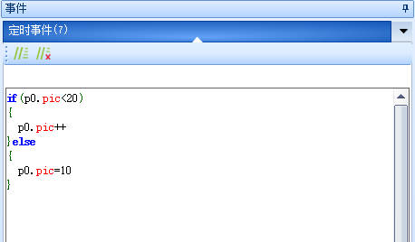

定时器控件
提示
视频教程： 定时器控件
定时器控件用于定时执行某些代码，或者延时执行某些代码，当定时被使能时，定时器里的代码会定时执行。
注意
1、每个页面的定时器数量不能超过12个。
2、定时器只能在当前页面运行，不可后台运行，如果想要定时器一直运行，每个页面都加个定时器。
3、定时器最小的定时时间为50ms，定时器的精度会随代码的复杂程度变化，会有一定的误差。
4、由于每个人的电脑性能不同，模拟器中定时器的效果可能会与实物有较大的差距，电脑上可能会运行得很准，但是串口屏实物上会偏慢，与屏幕内代码的复杂程度有关，请以实物为准。
5、请不要使用定时器来替代RTC功能，不带RTC的型号，使用定时器来实现是完全不现实的。
6、串口屏进入休眠（睡眠）模式后，定时器会停止运行，退出休眠（睡眠）模式后，定时器会继续运行。
定时器控件位于特殊控件栏上。

定时器控件-使用详解
关闭定时器
tm0.en=0
打开定时器
//打开定时器
tm0.en=1
注意
在定时器开启的情况下，对定时器的任意属性赋值（设置tim属性或者en属性），都会导致定时器重新计时。
例如一个定时时间为1000ms（1秒）的定时器tm0，另一个定时时间为50ms的定时器tm1中，在定时器tm1中不断执行tm0.en=1，那么tm0将永远没有执行的机会
若不想定时器重新计时，请使用以下操作：
//判断定时器是否打开，如果没打开，则打开
if(tm0.en!=1)
{
tm0.en=1
}
相关链接
定时器最大时间只能设置为65534(65秒多),怎么计时更长时间
例:计时1小时
新建一个定时器tm0，tim属性设置为1000（定时器每1000ms执行一次定时事件中的代码），新建一个变量n0，用于计时
在定时器tm0的定时事件编写以下代码
n0.val++
//3600秒,即1小时
if(n0.val>=3600)
{
//计时时间到,复位用于计时的变量
n0.val=0
//其他需要执行的代码
}
通过定时器定时刷新RTC到数字控件上
定时器的tim设置为300(定时器每300ms执行一次定时事件中的代码)，en设置为1(定时器开启)
n0.val=rtc0
n1.val=rtc1
n2.val=rtc2
n3.val=rtc3
n4.val=rtc4
n5.val=rtc5
n6.val=rtc6

提示
为什么将定时器设置为300ms？
因为300ms可以相对均匀的显示时间变化，不会占用太多性能（定时器定时时间越短，会越频繁进入定时器，占用更多单片机的性能）
两秒后跳转到其他页面
定时器的tim设置为2000(定时器每2000ms执行一次定时事件中的代码)，en设置为1(定时器开启)
定时器中的代码为
page page1 //跳转到page1

让n0控件每隔1秒自动增加1
定时器的tim设置为1000(定时器每1000ms执行一次定时事件中的代码)，en设置为1(定时器开启)
定时器中的代码为
n0.val++

使用定时器配合图片控件循环播放图片
定时器的tim设置为100(定时器每100ms执行一次定时事件中的代码)，en设置为1(定时器开启)
假设图片id从10-20
定时器中的代码为
if(p0.pic<20)
{
p0.pic++
}else
{
p0.pic=10
}

每个页面限制12个定时器，不够用怎么办
很多时候，多个定时器是可以和在一起的，比如我现在有3个定时事件，一个是10秒执行一次，一个是30秒执行一次，一个是60秒执行一次，那需要创建3个定时器吗，其实并不需要，只需要创建一个就够了
需要新建一个定时器tm0，一个数字控件n0，三个文本控件t0，t1，t2
tm0控件的tim属性设置为1000
定时器中的代码为
t0.txt=""
t1.txt=""
t2.txt=""
n0.val++
//因为不能在if里计算,我们需要提前计算好,在if中进行判断
sys0=n0.val%10
sys1=n0.val%30
sys2=n0.val%60
if(sys0==0)
{
//每10秒需要做的事
t0.txt="10s"
}
if(sys1==0)
{
//每30秒需要做的事
t1.txt="30s"
}
if(sys2==0)
{
//每60秒需要做的事
t2.txt="60s"
}
同一页面两个时间相同的定时器，谁先执行
根据定时器控件id大小决定，id小的先执行
定时器控件-样例工程下载
演示工程下载链接：
定时器控件-相关链接
哪些控件属性可以运行中修改，哪些不能运行中修改，绿色属性和黑色属性有什么区别？
定时器控件-属性详解
提示
绿色属性可以通过上位机或者串口屏指令进行修改，黑色属性只能在上位机中修改或者不可修改，可通过上位机进行修改指“选中控件后通过属性栏修改控件的属性”
type属性 -控件类型，固定值，不同类型的控件type值不同，相同类型的控件type值相同，可读，不可通过上位机修改，不可通过指令修改。参考： 控件属性-控件id对照表
id属性 -控件ID，可通过上位机左上角的上下箭头置顶或置底，可读，可通过上位机修改左上角的箭头置顶或置地间接修改，不可通过指令修改。参考： 如何更改控件的前后图层关系
objname属性 -控件名称。不可读，可通过上位机进行修改，不可通过指令更改。
vscope属性 -内存占用(私有占用只能在当前页面被访问，全局占用可以在所有页面被访问)，当设置为私有时，跳转页面后，该控件占用的内存会被释放，重新返回该页面后该控件会恢复到最初的设置。可读，可通过上位机进行修改，不可通过指令更改。参考：跨页面赋值，全局变量操作
tim属性 -定时时间,单位:ms(最小50,最大65534)，可读，可通过上位机进行修改，可通过指令更改。在定时器开启的情况下，对定时器的tim属性赋值，会导致定时器重新计时
en属性 -使能开关:0为关闭,1为开启，可读，可通过上位机进行修改，可通过指令更改。在定时器开启的情况下，对定时器的en属性赋值，会导致定时器重新计时